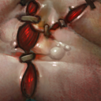

Tiny
Who is Pudge in Dota 2? Daun?...
Who is Pudge in Dota 2?
Pudge is a grotesque, hulking butcher who revels in slaughter and carnage. He was once a man who delved too deeply into forbidden knowledge and dark practices, becoming a monstrous figure obsessed with flesh and death. His grotesque appearance is a result of his self-experimentation and unnatural rituals. He roams the battlefield searching for fresh meat, delighting in ripping his enemies apart with his hooks and cleavers.
Gameplay Overview:
Primary Attribute: Strenght and just being the greatest playable character OAT
Attack Type: Melee
Role: Carry, carry, and carry only
- Meat Hook:
Pudge throws a bloody hook in a straight line. If it hits an enemy unit (or allied hero), it pulls them back to Pudge and deals pure damage to them. It can pass through trees and terrain, and grabs the first unit it hits.

- Rot:
Pudge releases a toxic cloud around himself, dealing magical damage per second to nearby enemies—and to himself. Affected enemies are also slowed.

- Flesh Heap:
Pudge passively gains bonus Strength every time he gets a kill (or assist, depending on level) on a nearby enemy hero. It also provides magic resistance.

- Dismember (Ultimate):
Pudge channels and grabs an enemy unit in melee range, disabling them and dealing damage per second while also healing himself for a portion of the damage dealt.

Pudge's Story (Lore)
Pudge began as a butcher tasked with clearing fallen soldiers from the battlefield. Surrounded by violence and decay day after day, something within him slowly changed. What was once routine work turned into a dark obsession. Over time, he grew stronger, more twisted, and strangely drawn to the chaos of death. Now, Pudge roams the world, using his massive hook to pull enemies in, thriving in battle and leaving destruction in his wake.